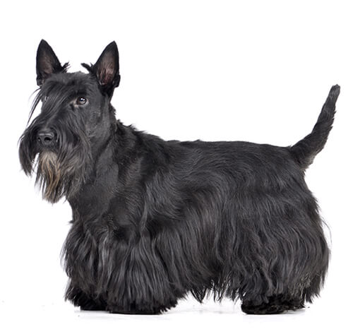

¿Qué son los perritos?

Mamífero carnívoro doméstico de la familia de los cánidos que se caracteriza por tener los sentidos del olfato y el oído muy finos, por su inteligencia y por su fidelidad al ser humano, que lo ha domesticado desde tiempos prehistóricos; hay muchísimas razas, de características muy diversas.

Croquetas para perro sabor res. 200kg
precio:$859.00

achorros Razas Medianas y Grandes 7.5Kg
precio:$389.00

Croquetas Salud Radiante Alimento seco 10Kg
precio:$569.00

Croquetas Para Razas Medianas, 2.72 Kg
precio:$709.00
Cómo cuidar a un perrito
Cuidar a un perro implica compromiso y atención. En general, es importante procurar una alimentación saludable para ellos, así como favorecer su actividad física y estimular su socialización. También es fundamental ofrecerle cuidados y revisiones veterinarias para controlar su estado de salud y mejorar su calidad de vida. Si se trata de un cachorro recién nacido, los cuidados del perro serán continuos, incluyendo el amamantamiento con leche materna o sustitutivo, y el destete, que se inicia a partir de las cuatro semanas de vida y de forma progresiva.

Mientras que, si se trata de un perro de edad más avanzada que adoptamos en casa, hay algunas indicaciones a tener en cuenta, como darle mucho cariño, seguridad y comprensión. Y en este caso, lo mejor es sacarle en paseos cortos y frecuentes para que se vaya habituando poco a poco a su nueva rutina fuera de la protectora o refugio.
Razas de perro
Una raza de perro o raza canina es un grupo de perros que tienen características muy similares o casi idénticas en su aspecto o comportamiento o generalmente en ambos, sobre todo porque vienen de un sistema selecto de antepasados que tenían las mismas características. Los perros han sido apareados selectivamente para conseguir características específicas durante miles de años. Si se trata de un cachorro recién nacido, los cuidados del perro serán continuos, incluyendo el amamantamiento con leche materna o sustitutivo, y el destete, que se inicia a partir de las cuatro semanas de vida y de forma progresiva.

La siguiente tabla muestra unos ejemplos de las razas que hay, hay al rededor de 354 razas en el mundo, pero solo mostraremos 3 como ejemplos
| # | razas | ¿Qué comen? | ¿Qué cómo son? |
|---|---|---|---|
| 1 | Terriers | Pueden alimentarse de desechos de carnicería, cartílagos o casquería, Son aptos los productos elaborados a partir de carne de ternera, cerdo o aves. Otra fuente de proteínas es el pescado (especialmente si son magros y de agua salada), los huevos o la leche. |  |
| 2 | Teckels | La alimentación del teckel no requiere grandes complicaciones: pienso seco de tamaño pequeño y que sea específico para la edad del perro. Es recomendable evitar los alimentos blandos para prevenir en la medida de lo posible la acumulación de sarro o problemas dentales derivados de un abuso de ese tipo de comida. |  |
| 2 | Welsh corgi Cardigan | Los corgis como cualquier perro necesitan ser alimentados principalmente con un tercio de carne, un tercio de verduras y un tercio de arroz. Se recomienda el uso de suplementos alimenticios en polvo o tabletas para una salud óptima. |